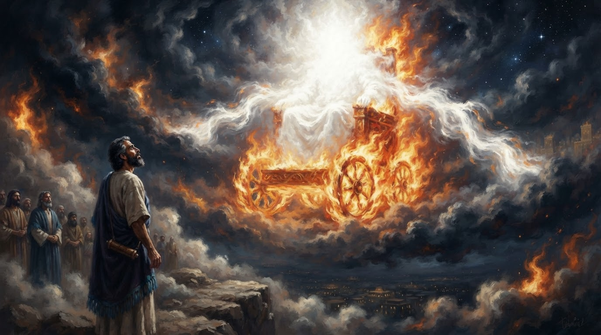
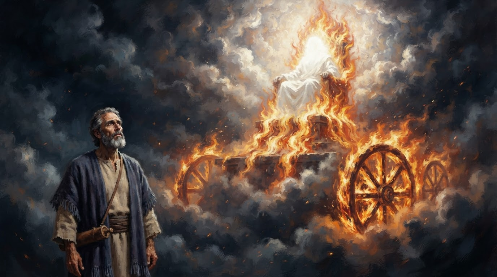
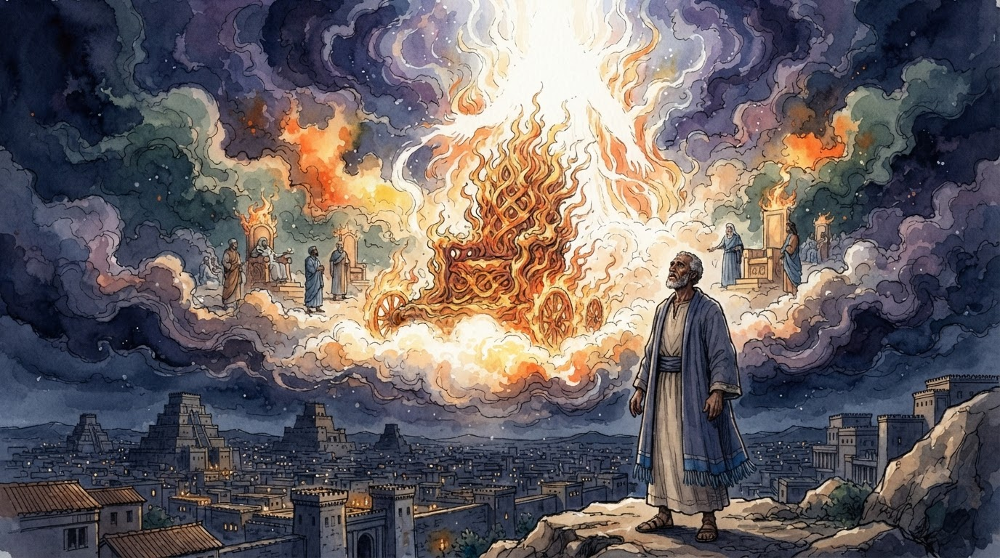
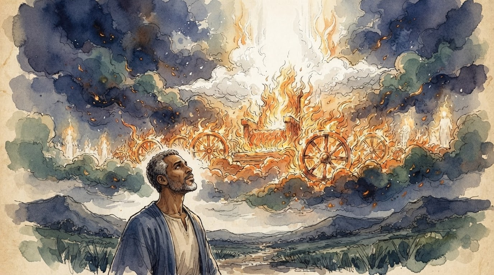
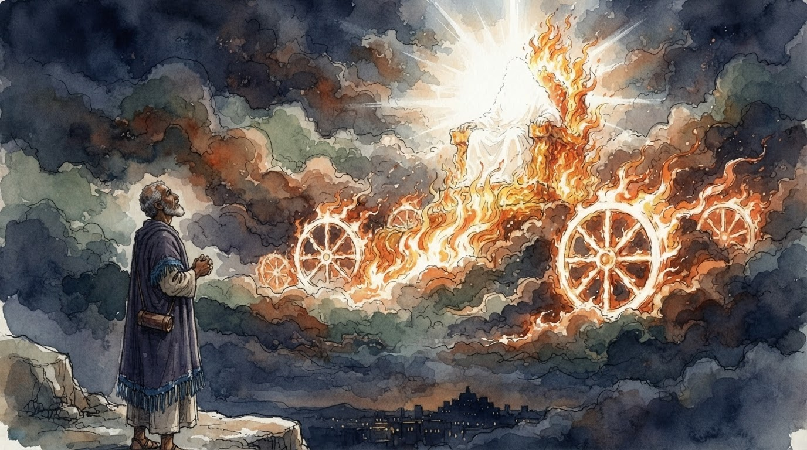
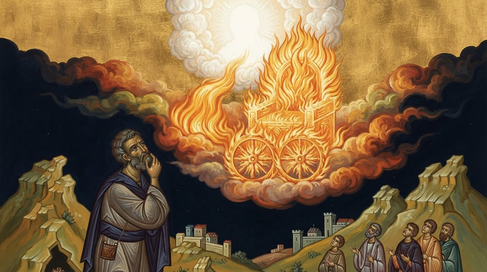
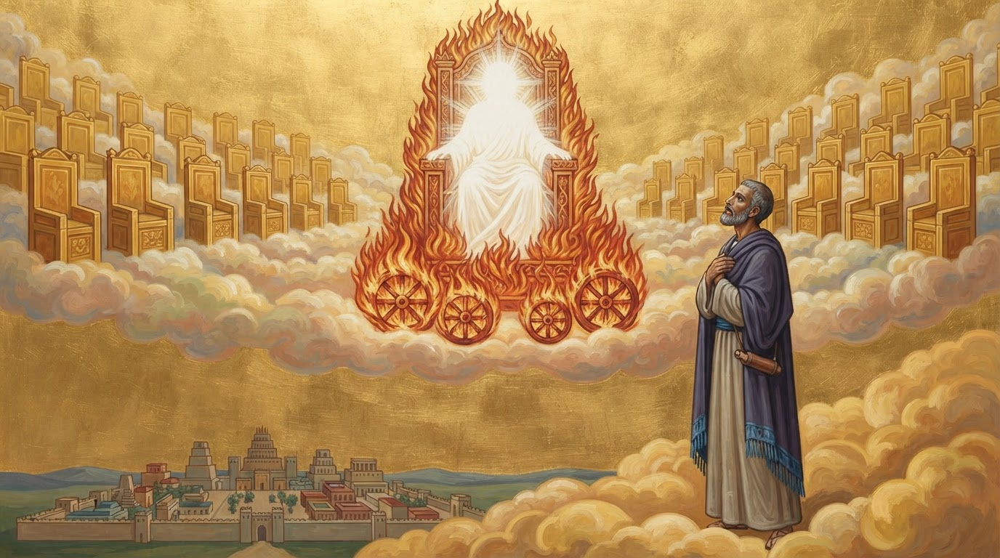
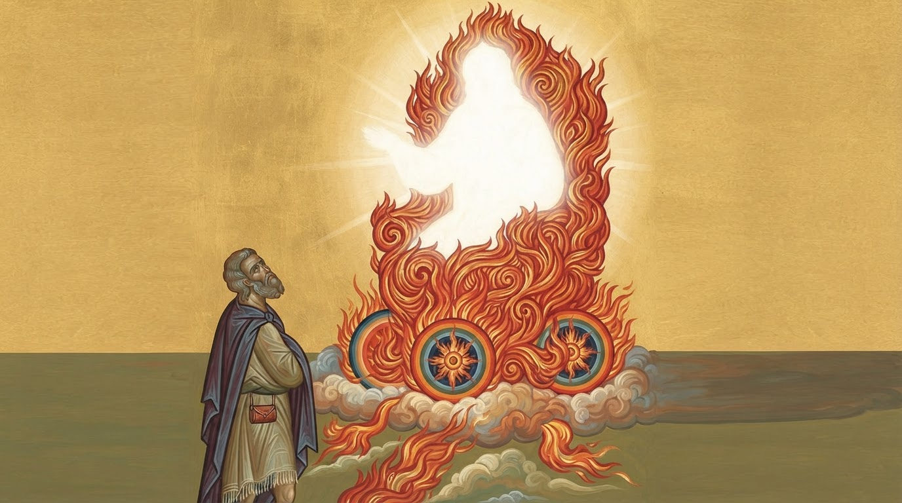

Daniel 7:9: the missing identity now reaches all nine prompts. Images still fail the release gate: 3 no-body passes, 5 failures, 1 ambiguous.
All originals retained. Agent assessments; human acceptance pending. Select a style and open any image at full size.

White radiance and spreading cloth-like wisps above an apparently empty throne are ambiguous; no confident no-body pass. A cursive signature-like mark is visible at the lower right.
A seated, white draped human-shaped body with a luminous head and arms remains on the throne. Hiding the face does not meet the constraint.

White garment-shaped seated torso/lap and apparent hands on the throne arms remain beneath a luminous head.

Empty fiery throne with a non-figurative pillar of fire/radiance; no visible human-form divine subject. Daniel and court figures retain ordinary human forms. No clear exposed presentation margin.

Empty burning throne and wheels beneath radiance; no visible human-form divine subject. Large unpainted tan paper margins surround the composition; rural setting is a weaker match for the section look.

White draped seated body with apparent hands at the armrests and a luminous head; unpainted paper remains at the lower and side edges.

Empty flaming throne under cloud/radiance; no visible human-form divine subject. Daniel and attendants remain distinct human figures. No obvious presentation border or text in this sample.

A fully draped seated human-shaped body, arms/hands and luminous head occupy the throne despite the protected constraint.

A large glowing human silhouette with a rounded head, torso and projecting arm-like form occupies the central flames; absence of facial detail does not meet the no-body rule.
All three style rows fail overall. The nine-image retest cost $0.30777395 including one plan call. Public generic admission stays disabled.